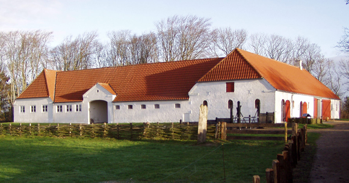
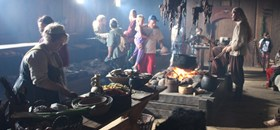
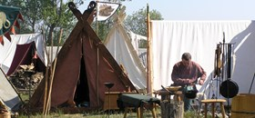
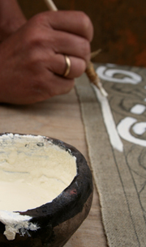

Background and History
Archaeologists and people with a general interest in history have always believed that Ribe played an important role in the Denmark of the Viking Age. The challenge, of course, was to put this claim to the test of scientific examination. Excavations carried out in the area by Den Antikvariske Samling (The Antiquarian Collection, now part of Sydvestjyske Museer, the association of museums in south-western Denmark) over the last many years have fully confirmed these assumptions. Almost every year, new and exciting finds are made, and there is no longer any doubt that Ribe is one the world's most important regions for the documentation of trade, craftsmanship and farming in the Viking Age. For instance, new knowledge has been published, based on finds made in Ribe, proving that thrown ceramics were manufactured in Denmark 500 years earlier than previously believed. The discovery of hop remains should perhaps also lead us to change our perception of the time at which the Danes began to brew beer.
As a natural consequence of our strong roots in the past, Ribe VikingeCenter was established in 1992. At the present time we have built up three different Viking environments of great importance and impeccable craftsmanship: The Market Place and adjoining ship, an authentic copy of a site from the early 8th century. The Great Farm from 980 AD; a long-house with 5 connected buildings. Eight town-houses from the year 825 AD. It is thus possible to experience the developments that took place over the course of the Viking Age and in this way gain insights into an important epoch in Danish history, which is seen by most Danes as crucial to the formation of our culture.

All of our reconstructions have been created in close collaboration with Den Antikvariske Samling, which has carried out the excavations on which our reconstructions are based and placed their expertise at the disposal of our architects and our craftsmen.
Presentation and Communication
The stated purpose of Ribe VikingeCenter is to communicate Ribe's Viking Age history by bringing it to life in our reconstructed environments. Alongside the presentation, theories are tested and developed through experimental archaeology; not just as regards the reconstruction of buildings, garments, tools and equipment but also in relation to the sociological side of history: How did communal life take shape under the physical conditions and surroundings of the past.
Our theoretical foundation is built on the way historical workshops traditionally present historical information: Presentations reflect a high level of academic commitment, they are in-depth, taking place over extended periods and in authentic surroundings. As another important aspect we have chosen to let the creation and maintenance of our reconstructions form part of the presentation itself. This is naturally time-consuming but provides us with a dynamism that cannot be achieved by simply opening up a "finished" centre.
At Ribe VikingeCenter, visitors can always experience new projects in the making, which naturally piques the curiosity. One wishes to learn more about the newly emerging features and this becomes an opportunity for interaction with the craftsmen. Many return again and again to see the final results of the works they have witnessed in progress. The conservation of old crafts and trades is a very important issue, in this context. The living environments offer an opportunity to see many traditional crafts carried out and for experiences to be exchanged, which would otherwise be at risk of getting lost over time. Remarks such as, "My grandfather did this in the same way" and "Were the Vikings really this sophisticated?" or "Wouldn't it be possible to…," etc. are commonplace at the Centre and helps make interactions engaging and interesting for both visitors and staff.
Staff
Ribe VikingeCenter is a multi-facetted and exciting business, also when it comes to our staff.
We cooperate closely with Produktionsskolen Lustrupholm , which means that we have approx. 30 students of 16-25 years connected to the Centre, all year round. Production school students are an integral and important part of our historical reconstructions and communication. Students participate in, among other things, the manufacture of Viking garments and the maintenance and production of equipment for our houses. They take good care of our many animals and participate in the daily operation of our kitchen and café. In the summer, students and staff play a pivotal role in bringing history to life at Ribe VikingeCenter, working side by side with volunteer artisans from all across Europe.

Ribe VikingeCenter has a highly competent staff who over the years have amassed an enormous wealth of expertise in historical craftsmanship, reconstruction work and communication. The staff of the Viking Centre and Production School numbers around 20 in the winter part of the year and approximately 30 in the Summer season. A number of our colleagues are employed on flexitime contracts and we cooperate with Esbjerg Kommune in testing the work-abilities of people with regards to the clarification of their role in the flexitime system.
Volunteers
The Centre keeps contact with many different volunteer groups. These are committed adults and children with an interest in and knowledge of crafts and techniques employed in the Viking Age. Some have organized themselves in specific interest groups, such as smiths, archers and horsemen - others are affiliated as individuals through whichever craft they have mastered. Volunteers take part in our presentation on certain occasions, coinciding with their free time, etc. Many have learned their craft by working with some of the best craftsmen in Denmark and their skills and historical knowledge are constantly updated, in order to communicate historical knowledge as accurately and authentically as possible.
In addition to Viking groups and individuals with connections to Ribe VikingeCenter we are visited each year by around 300 Vikings from all over the world, but especially from Denmark, Germany and Holland - people who spend large amounts of their free time studying, reconstructing and living the Viking "way of life." They are active and positive contributors to the Centre's efforts to make the past come alive, just as we, through the foreign guest Vikings, are given insight into the garment and equipment of the period from northern Norway to Miklagård/Byzans.
Academic and Specialist Partners
Ribe VikingeCenter cooperates with a large number of specialists and institutions on both theory and its application. This can be in regards to concrete issues, but cooperation often takes the form of a dialogue where we attempt to apply our ideas, gained through everyday experimentation, to the theoretical framework offered by academic research, with the goal of reaching a wider understanding of the past. Many of our contacts work in state-approved museums or have been recognized for their abilities or craft to such an extent that their knowledge and expertise can be safely employed in a museum context.
Den Antikvariske Samling/Sydvestjyske Museer
One of our fundamental partners is Sydvestjyske Museer (formerly "Den Antikvariske Samling"). Since Ribe VikingeCenter's inauguration in 1992, a close partnership has been maintained between the two institutions. As such, the reconstruction of our three Viking environments from Ribe has been carried out in accordance with excavations done by the museum and under professional supervision from their archaeologists, just as they continue to contribute their historical knowledge of both specific issues and problems of a more general nature. In return, the Viking Centre can contribute our practical, experimental experience, regarding for instance the use of tools and household items, wear-and-tear on shoes and more. Furthermore, we have produced several reconstructions for use in the exhibition at the museum Ribes Vikinger: a plank road, costumes and a number of forged objects.

New Projects
Ribe VikingeCenter is constantly planning new projects and activities. Parallel to the reconstruction work done in the three Viking environments, we have built a new and incredibly handsome area of entry, a historical playground, the Viking ship Gisla has been built in collaboration with the Viking Ship Museum in Roskilde and we have created a kayaking station and a new archery range. The Centre continues to expand the number of visitor activities and we have produced historically accurate Viking clothes in a children's size, in order to give our youngest visitors the best possible way to imagine themselves as parts of history. Furthermore, together with the school service in Esbjerg Kommune, we have established a school program for 5th and 6th graders.
Ribe VikingeCenter are at the forefront of both reconstruction and communication and we are constantly developing our working processes - this is for us the best way to remain an interesting and engaging site to visit… again and again!
Partners, Viking Groups, etc.
Kulturklubben Ribe www.kulturklub.dk
Museet Ribes Vikinger www.ribesvikinger.dk
Ribe Kunstmuseum www.ribekunstmuseum.dk
Vadehavscentret www.vadehavscentret.dk
ULL, Ribe Vikinge Langue Laug www.ull-ribe.dk
Vikingesmedelauget Regin www.123hjemmeside.dk/vikingesmed
Ryttergruppen Dreki www.dreki.dk
RANILD www.spinnet.dk
Courses on historical crafts www.aktivhistorie.dk
Vikings in Greenland www.greenland-guide.dk/leif2000
Magasinet Viking www.vikingmagasin.dk
Historiske værksteder www.historiskevaerksteder.dk
Vikingeskibsmuseet i Roskilde www.vikingeskibsmuseet.dk
Vikingeborgen Trelleborg www.trelleborg-museet.dk
Vikingecenteret på Fyrkat www.fyrkat.dk
Vikingemuseet i Hedeby, Tyskland www.schloss-gottorf.de/haithabu
vaee, arkæologisk forskning og undervisning, Holland www.vaee.net
Vikingemuseet, Moesgård www.moesmus.dk/da/udstillinger/vikingemuseet
Vikingemuseet Ladby www.vikingemuseetladby.dk
Ringkøbing-Skjern Museum www.levendehistorie.dk
The Viking Kings, Norway www.vikingkings.no
The Jelling Dragon, Viking Craft Store, England www.jelldragon.com
Hacheschmiede, Germany www.hacheschmiede.de
Raymond's quiet Press, USA www.quietpress.com
Frankland, France www.frankland.fr